Both sides of every call. No root.
Phone calls, and WhatsApp, Telegram and Viber calls. No computer and no second app — the phone pairs with its own Wireless debugging and sets itself up.
- Free and open source
- No account, no cloud
- Built and checked by F-Droid
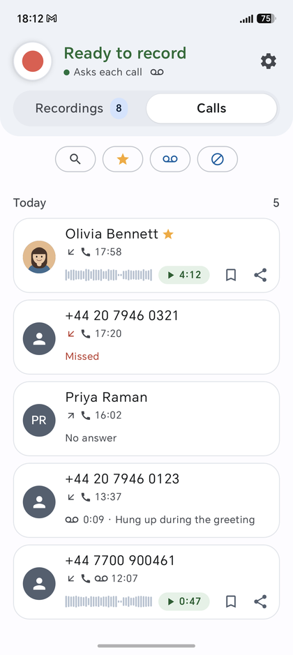
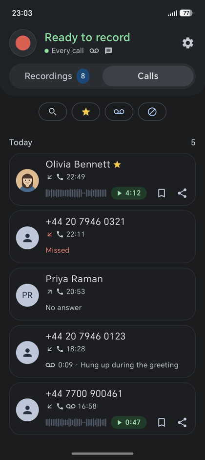
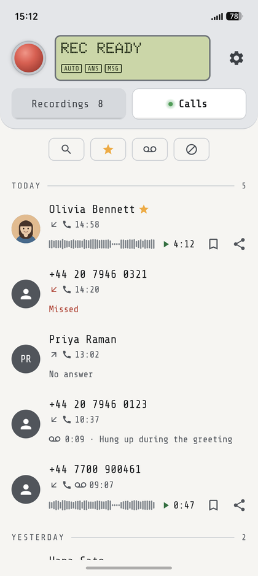
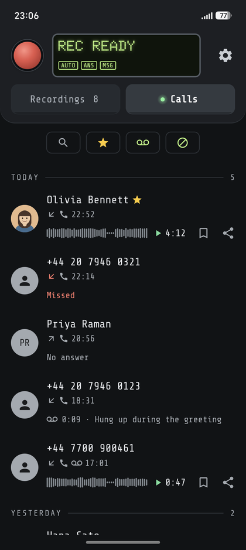
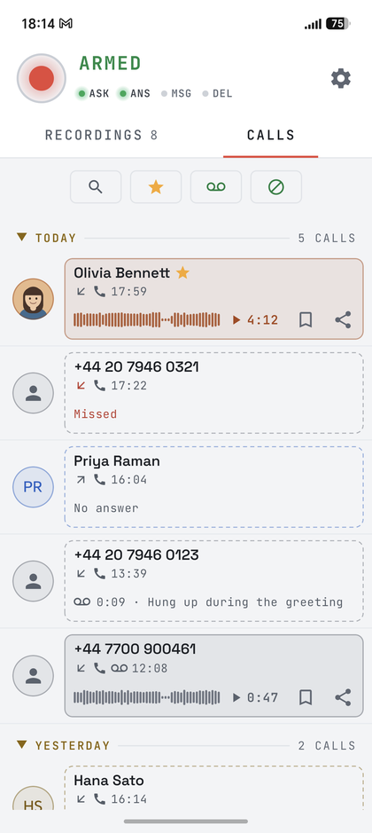
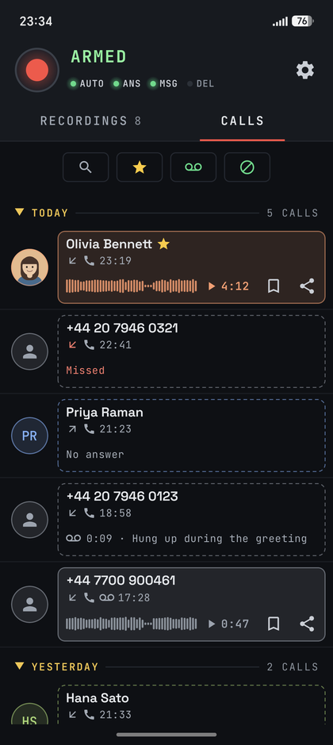
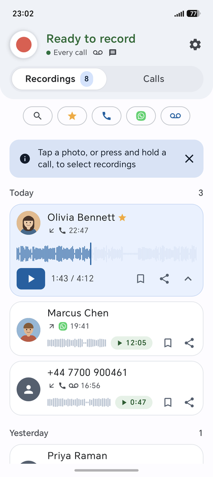
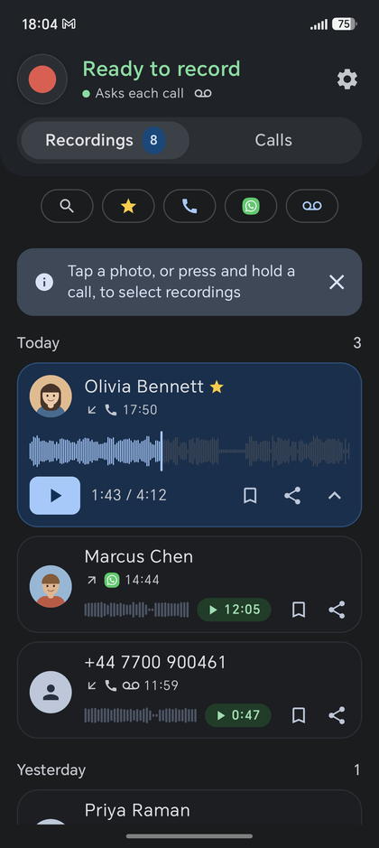
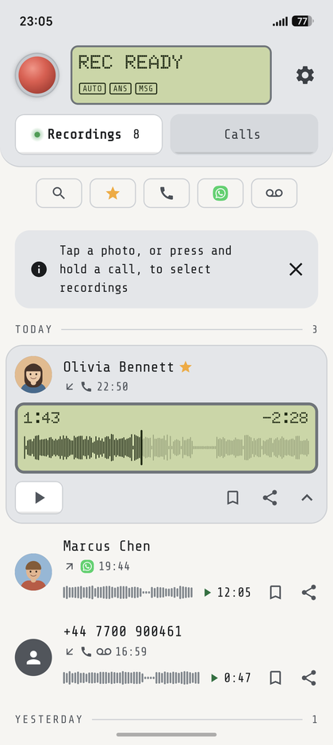
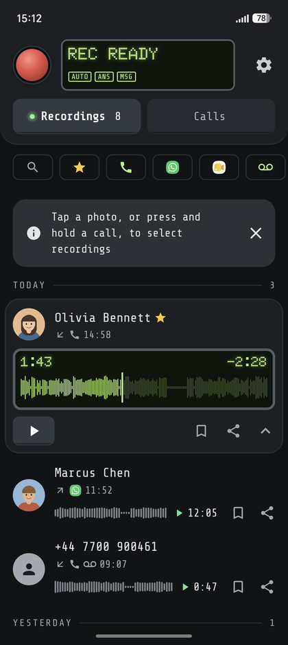
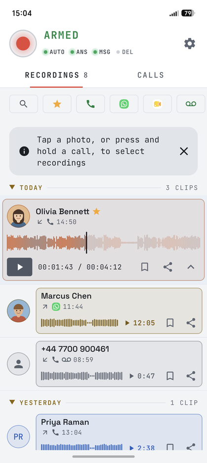
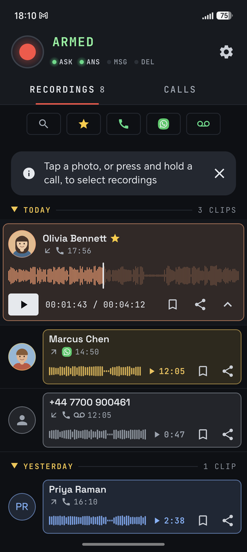
Why JemRec
Android stopped letting apps record calls years ago. JemRec records them anyway, both sides, without asking you to root your phone.
Both sides of every call
Phone calls, and WhatsApp, Telegram and Viber calls on Android 14 or newer.
No root, no computer, no second app
The phone pairs with its own Wireless debugging and sets itself up, once, in a few minutes.
Nothing leaves your phone
No account, no cloud, no analytics. The only network JemRec uses is the phone talking to itself.
It tells you when something is wrong
A recording that came out silent, a recorder that is down, a call that went by unrecorded — each gets a notification, so you do not find out on the day you need the call.
Your rules
Record every call or be asked first, keep only some people’s calls, and let old or very short recordings clear themselves away.
Free, open and verifiable
Apache-2.0, and F-Droid rebuilds every release from this source and checks it matches, byte for byte.
Get started
About three minutes, on the phone, once.
Install it
From F-Droid, or the APK from the Releases page — the same signed file either way, so each can update the other.
Trouble installing? →Follow the setup
JemRec walks you through it and watches for each step: Developer options, USB and Wireless debugging (no cable needed), and pairing — the phone pairs with itself. Type the six-digit code into JemRec’s notification, not the app.
The setup, step by step →Let it start by itself
A restart stops the recorder. Allow auto-start (Settings → Survive a restart) and it is back seconds after Wi-Fi returns; without it, open JemRec once.
After a restart →
Then run Settings → Diagnostics → Self-test: it answers, in about a second, whether your phone hands over both sides of a call. The full manual says what to do when a step misbehaves.
Recording calls is your responsibility. Consent law differs by country and sometimes by state: one party, all parties, or a spoken notice. JemRec records what you tell it to and warns nobody on your behalf.
A look around
Tap one to see it properly.
The app comes in three looks, each following your phone’s light or dark; these follow the page’s — the buttons at the top switch the look and the theme. The people in them do not exist: a screenshot of a call recorder is a screenshot of someone’s calls, so the list is filled with invented ones. Everything else is real.
What you can do
Each of these has its section in the manual.
Recordings are Opus files in the phone’s standard
Recordings/JemRec folder, where any file manager or music app
can open them — or in a folder you choose.
How it works
Android’s voice-call audio source carries both sides
of a call, but only system-level identities may read it — and
the one an ADB session runs as, the shell, is among
them. Getting a shell normally takes a computer, root, or a helper app
like Shizuku. JemRec makes the phone its own computer:
- The app pairs with the phone’s own Wireless debugging — the same pairing a laptop does, with both ends on the same handset.
- For a few seconds, it uses that session to start a small recorder that runs as the shell, then closes it. The recorder outlives the session.
- The recorder watches the calls and writes each one to a file itself, so a phone that freezes background apps cannot cut a recording short.
- The app collects the finished file over a socket on which the recorder and the app each prove who they are.
Wi-Fi is needed only to start the recorder — after a reboot, say — never to record.
The design, and the measurements behind each decision →Will it work on your phone?
Developer options and Wireless debugging are on every Android phone, though the menu they live in differs by make; JemRec names the right path for yours.
What it records, by Android version
Both sides recorded on three very different phones
| Phone calls | Messenger calls | |
|---|---|---|
| Android 12 and 13 | ✓ | Android does not allow it |
| Android 14 and newer | ✓ | WhatsApp, Telegram, Viber |
- Honor Magic 8 ProMagicOS 10 and 11, Android 16 and 17 — the phone it was developed on
- Samsung Galaxy S20One UI
- OnePlusLineageOS 23
Signal takes the same path as the other messengers and has not been tested yet.
Three is not a compatibility list. The one thing nobody can promise for a phone they have not held is its audio hardware: some hand over both sides of the call, some one, some silence. The Self-test answers it on yours in about a second.
The answering machine has been tried on the Honor, on 2G calls; its carrier would not register it for VoLTE. Whether a phone carries a greeting to the caller is up to its audio hardware too, so the answering machine has its own checks and a test call.
Privacy and permissions
JemRec has no servers, no accounts and no analytics: what it records stays on your phone.
No microphone permission
The app never records; the recorder does the capturing — calls, and your answering-machine greeting.
Nothing leaves the phone
No account, no server, no analytics, and nothing is collected about you.
Calls and contacts only if you allow them
To name callers, keep calls by who they were with, and notice a call that went unrecorded. Everything works without them.
No caller on the lock screen
While a recording plays, the phone’s media controls name the caller only once it is unlocked; locked, they say Call recording.
Debugging stays on while JemRec is installed
The recorder needs it. A computer you have paired can connect over the same Wi-Fi, so now and then check Wireless debugging → Paired devices.
Questions
Something else? Ask on GitHub.
Does it really record both sides?
Yes, where the phone’s audio hardware hands both sides over — which it did on every phone above. The Self-test tells you for yours in about a second. On speakerphone, a messenger call’s other person is heard on your side too: your side is the plain microphone, without the call app’s echo cancellation.
Will callers hear my greeting?
On the Honor it was developed on, yes. No app can play sound into a call, so the recorder does it as the shell, through an output Android calls in-call music; not every phone has one. Before you switch the answering machine on, its Checks tell you in a second whether yours does, and a Test call settles it for that kind of call: 2G, VoLTE and Wi-Fi Calling differ. Your microphone is muted while the greeting plays and the message is left, so the caller hears your greeting and nothing of your room.
Why does it need Wi-Fi?
Only to start the recorder: that is the one step that needs Wireless debugging, which Android runs over Wi-Fi. Once started, the recorder carries on with Wi-Fi off, on mobile data, anywhere. A reboot stops it, and the next few seconds of Wi-Fi bring it back by themselves (see Get started, step 3). Until then nothing is recorded — the header says so, and after two minutes a notification does too.
Why isn’t it on Google Play?
Play removed call recorders in 2022 by forbidding the Accessibility API for recording, and no policy change since has re-opened the door. That is a distribution decision, not a technical one — the app itself never needed Play, and F-Droid asks only that a build be free software and reproducible from its source, which this one is. It never will be on Play.
Is recording calls legal?
It depends on where you and the other person are: some places need one party’s consent, some everyone’s, some a spoken notice. That is your responsibility; JemRec records what you tell it to and warns nobody on your behalf.
Where are my recordings, and what happens to them if I uninstall?
In the phone’s standard Recordings/JemRec folder (or the folder you chose), as Opus files any music app can play; Share can also convert one to .m4a for iPhones and Macs. They are yours rather than the app’s, so they stay when JemRec is uninstalled — delete them first if you want them gone. Deleted ones wait in Recently deleted for 30 days.
How do I turn debugging off for good?
Uninstall JemRec first. If the recorder is running, it notices the uninstall within a few minutes, turns both debugging switches off and exits; either way, once JemRec is gone nothing turns them back on.
Try it on your phone
Free, no account, about three minutes to set up — and the Self-test tells you in a second whether your phone hands over both sides.
JemRec is free: no ads, no account, nothing collected. If it has been useful to you, support its development on Donatello.